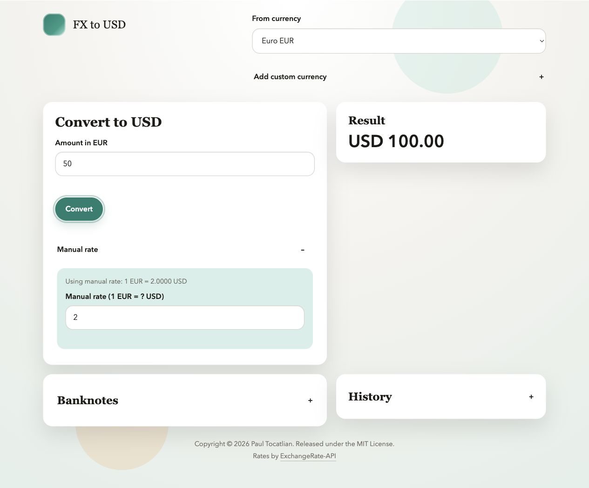

@@IMAGE0@@ @@IMAGE1@@ @@IMAGE2@@
FX to USD Converter is a small, installable browser app for converting foreign currency amounts to US dollars. It fetches live exchange rates, keeps a local cache for offline fallback, supports manual rate overrides, and shows USD equivalents for common banknotes.
The app is intentionally static: it has no backend or account requirement. Local use does not require a build step; npm run build prepares the deployment directory.
Live demo: tocatlian.github.io/fx2usd

Features
- Convert supported foreign currencies to USD with live ExchangeRate-API data.
- Use cached exchange rates when live rates are unavailable.
- Enter a manual rate when a real counter, receipt, or market quote differs from the live rate.
- Add custom three-letter currency codes that persist in browser storage.
- View banknote denomination references for supported currencies.
- Track recent rate changes in local history.
- Install as a lightweight progressive web app through the browser.
- Load the app shell offline after the first served visit.
Quick Start
Open index.html directly in a browser for a quick look, or run a local server:
npm startThen visit http://localhost:8000.
The offline app shell uses a service worker, so it is available when the app is served from localhost, 127.0.0.1, or HTTPS.
Requirements
- Node.js 20 or newer for project scripts and tests.
- A modern browser with
localStorage,fetch, andIntlsupport.
The browser app itself does not require Node.js after it is deployed.
Development
Install the locked dependency set:
npm ciRun tests:
npm testRun the full local quality gate:
npm run checkServe locally:
npm run serveBuild the static deployment output:
npm run buildThe test suite uses Node's built-in test runner and a small fake DOM harness. The full check also runs formatting, JavaScript linting, CSS linting, HTML validation, project metadata validation, tests, and the static deployment build.
For scheduled local maintenance tasks, see docs/local-maintenance.md.
Project Structure
.
|-- .github/ # GitHub templates, CI, Dependabot, and Pages deployment
|-- docs/ # Repository images and supporting documentation assets
|-- scripts/ # Local development, build, and validation helpers
|-- tests/ # Node regression tests
|-- app.js # Browser application logic
|-- index.html # Static application shell
|-- manifest.webmanifest # PWA manifest
|-- sw.js # Service worker for offline loading
`-- styles.css # Application stylesDeployment
This project includes a GitHub Pages workflow at .github/workflows/pages.yml. GitHub Actions runs npm ci, the quality gate, and npm run build, then deploys dist/ whenever changes merge to main.
See PUBLISHING.md for the repository settings and release checklist.
For other static hosts, deploy the files generated by:
npm run buildData and Privacy
The app stores selected currency, custom currencies, cached rates, and rate history in the user's browser localStorage. It does not send this saved data to a project-owned server. The service worker caches same-origin app files for offline loading, while live rates are fetched from ExchangeRate-API. See PRIVACY.md for details.
Rate Source
Live rates are fetched from the open ExchangeRate-API endpoint at https://open.er-api.com. No API key is required by this project.
Contributing
Contributions are welcome. Please read CONTRIBUTING.md, follow the Code of Conduct, and run npm run check before opening a pull request. Release history is tracked in CHANGELOG.md.
Security
Please report suspected vulnerabilities privately. See SECURITY.md.
License
Released under the MIT License.